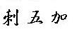

|
|
Siberian Ginseng

ci wu jia (incorrectly
called, in America, Siberian Ginseng.)
By:
Joe Hing Kwok Chu
The root, the rhizomes (underground stem) and
the leaves are being used.
"Siberian ginseng"
products that
are sold in America have nothing in similar with any
kind of ginseng. The Siberian genseng plant is a shrub of 1 to 3 meters
tall, while the ginseng plant
is herbaceous. It does not have any similarity in looks to Chinese ginseng,
Korean
ginseng or American ginseng. It is called Siberian ginseng in America for
advertising purposes.
It was first introduced
into the American herb market in the late 1970s as "Wuchaseng" and "Wujiaseng."
(wu jia sen 五加蔘) There appears to be no historical precedent in
Chinese traditions to applying the qualifier "seng ( 蔘 or short for
ginseng )" to E. senticosus (Shiu Ying Hu, 1979).
The correct Chinese name is ci wu jia.
The United States Congressional amendment to the Federal Food, Drug
and Cosmetic Act – signed into law in May 2002 – eliminates any
confusion regarding what is true ginseng. Now only the genus Panax can
be called ginseng on labeling or in advertising.
This plant is closer to wu jia pi.
See picture of
Siberian ginseng plant
in a Chinese site.
|
Biological name: |
Eleutherococcus senticosus, Acanthopanax senticosus |
|
Common Name: |
devil's root
touch-me-not
Siberian ginseng (it is not a type of ginseng)
|
|
Distribution: |
northern China, Korea, Japan and southeastern Russia
(Taiga
region). |
|
Properties (characteristics) |
warm, bitter, |
|
Channels (meridians)
entered: |
lung, spleen, kidney |
|
Actions &
Indications: |
For chronic inflammation of bronchi, neurasthenia, low
sexual function, weakness, low white cell count after radiation therapy.
It helps to reduce stress, to improve the immune system, to fight cancer
and aging, to reduce other effects of radiation, to improve adrenal
function. Ridding of dampness, pain, weakness in lower limbs, insomnia,
tiredness, dizziness due to weakness and anxiety. |
|
Dosage: |
9~30 g for boiling with water and to be used as
tea.
In tablets or capsules: each dosage equals about 3 gram of dry root.
|
|
Chemical ingredients: |
The root contain varieties of glucosides (0.6~0.9%):
daucosterol, acanthosides A,B,B1,C,D,E, isofraxidinglucoside,
ethyl-α-D-galactoside, syringaresinol glucoside, syringin, hyperin.
(More to upload. If you need them in a hurry please email our
Research
Librarian.) |
|
Modern Research: |
(1). Its anti-fatigue effect is stronger than that of ginseng.
(2).
Improves function of megalocytes. (3). Improves antigen. (4). Inhibits the
growth of cancer cells and leukemia of laboratory mice. (4). Increases
the rate of the formation of e-rosette of laboratory mice. (5).Ginsenosides
characteristic of Panax ginseng are not found in the roots of ci wu jia.
(6). The extracts from the plant, taken orally, increased the ability to
handle adverse physical conditions, improved mental performance, and
enhanced the quality of work under stressful conditions. (7). To avoid
adjustment to the herb, it should be used for no longer than 60
consecutive days, followed by a period of 2-3 weeks of abstinence before
using it again. (8) according to School of Food and Nutrition of
Fu Ren University in Taiwan (輔仁大學食品營養系), it improves the oxygen intake up to 8.2% on
20 athletes after taking 400mg per day of ci wu jia for 4 weeks. (9)
dilates coronary arteries.
|
|
Cautions: |
May not suitable for
yinxu (yin deficient) type of bodies. |
Also:
See
ginseng
See
wu jia pi
|